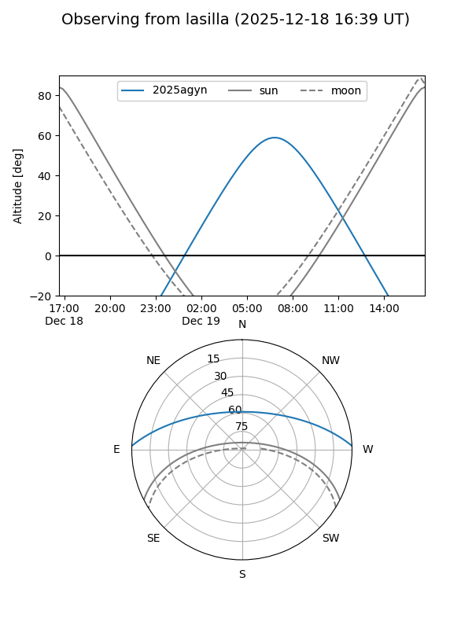
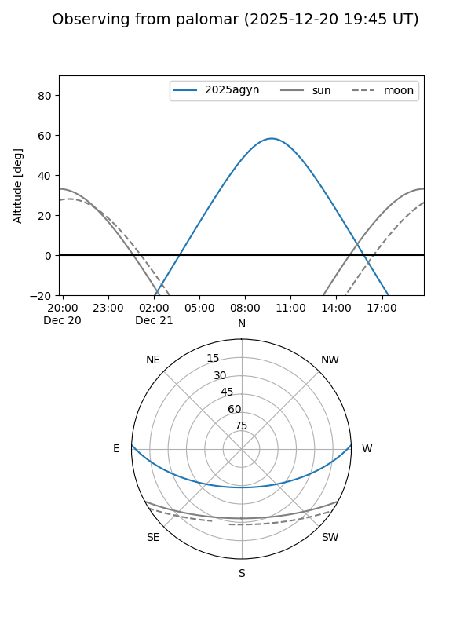
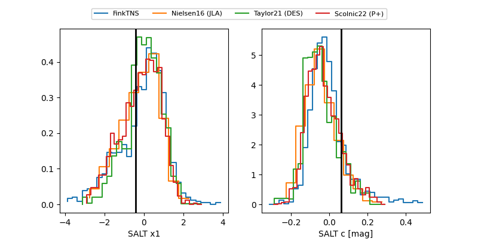

2025agyn
Target 2025agyn at 2025-12-22 18:06
Aliases and brokers:
FINK: fink-portal.org/ZTF25acgzheh
Lasair: lasair-ztf.lsst.ac.uk/objects/ZTF25acgzheh
ALeRCE: alerce.online/object/ZTF25acgzheh
TNS: wis-tns.org/object/2025agyn
YSE: ziggy.ucolick.org/yse/transient_detail/2025agyn
alt names
ZTF25acgzheh (ztf,fink_ztf)
2025agyn (tns,yse)
ATLAS25pth (atlas)
Coordinates:
equatorial (ra, dec) = 119.1903,+1.83496
equatorial (HMS+DMS) = 07:56:45.66,+01:50:05.86
galactic (l, b) = (218.8633,+15.35041)
Flags:
Photometry:
last ztfg=19.51, ztfr=19.37
4 ztfg, 4 ztfr detections
Lightcurve

Visibility


Additional plots
